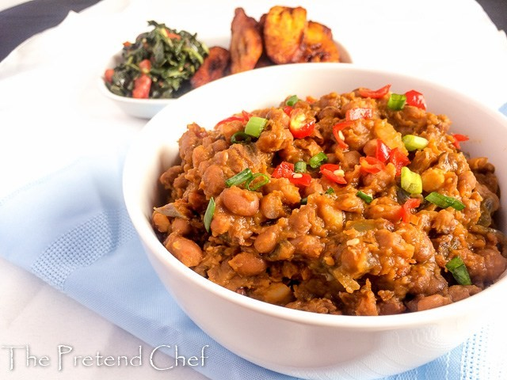

Beans

Cooking procedures
Ingredients
- Red-oil
- Beans(white preferrably)
- Fresh pepper
- Ground crayfish
- Salt
- 4 Big-sized tomatoes
- Smoked fish
Steps
- Gleen your beans depending on the quantity you wish cook- to remove stones, weevils and husks.
- Wash well in a bowl of salted lukewarm water and transfer into a pot of already boiling water.
- Add some slices of onions and salt to taste and allow to boil until very soft.
- In another dry pot, heat red-oil, add your blended mixture of pepper, tomatoes etc., stir and fry for 3mins.
- Add your powdered crayfish, smoked fish, little water and salt to taste. Then strain your cooked beans add to the mix.
- stir well and allow to simmer a little under low heat.
- Your porridge beans is ready to be served. Yummy!
Back